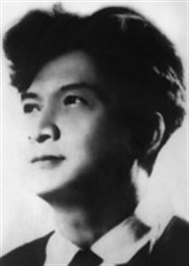

Sinh năm 1920. Quê ở Bình Định. Học trường Qui Nhơn. Có bằng thành chung.
Đã đăng thơ: Tin văn, Tiểu thuyết thứ bảy, Phụ nữ, Trong khuê phòng, Người mới.
Đã xuất bản: Điêu tàn (1937).

.
Tôi cầm bút viết bài này thì văng vẳng bên tai tôi giọng ca Nam Bình đưa sang từ nhà bên cạnh. Giọng ca âm thầm ai oán, mỗi lần tôi nghe lại khiến tôi bồn chồn, chân tay tôi rời rã.
Cũng lạ! Bị chinh phục đến tiêu diệt mà cảm được lòng những kẻ đã diệt mình một cách sâu sắc như thế dễ chỉ có dân tộc Chiêm Thành. Những nhạc công của chúng ta luôn ca nỗi oán hờn của họ. Bao nhiêu thi nhân của ta đã bị ám ảnh vì nỗi oán hờn của họ. Chúng ta lại còn dành riêng cho họ một nhà thơ, để vì họ giải dùm cho những uất ức bao nhiêu năm như nghẹn ngào trên sông núi này... Vong linh đau khổ của nòi giống họ đã nhập vào Chế Lan Viên; cho nên, dẫu không phải người họ Chế, Chế Lan Viên vẫn là một nhà thơ Chiêm Thành. Quyển Điêu tàn đã đột ngột xuất hiện ra giữa làng thơ Việt Nam như một niềm kinh dị.
Chú thích:
[1] Chế Lan Viênkhông ưng cho chúng tôi đề tên thật và in ảnh của người.
[2] Trong tựa Điêu tàn.
[3]Tiếc câu sau không xứng mấy câu trên
Nó dựng lên một thế giới đầy sọ dừa, xương máu, cùng yêu ma.
Chỗ này một yêu tinh nghe tiếng trống cầm canh chợt nhớ nơi trần thế.
Rồi lấy ra một khớp xương rợn trắng
Nút bao dòng huyết đẵm khí tanh hôi
Tìm những "miếng trần gian" trong tủy cạn,
Rồi say sưa, vang cất tiếng reo cười.
Chỗ kia trong:
... Những cảnh ngàn sâu cây lả ngọn
Muôn ma Hời sờ soạng dắt nhau đi.
Đừng hỏi ai những cảnh ấy thi nhân đã thấy ở đâu "Hãy nghĩ lại! Có ai thấy vào buổi chiều, rụng ở trong tháp một viên gạch cũ mà hỏi: viên gạch ấy chu vi, diện tích là bao nhiêu? Đúc từ đời nào? Ở đâu? Bởi ai? Và để làm gì? ". Chế Lan Viên đã trả lời như vậy. [2]
Ta hãy theo dõi thi nhân trong cái thế giới lạ lùng ấy. Có khi ngồi trên bờ bể Chế Lan Viên bàng hoàng tự hỏi:
Ai kêu ta trong cùng thẳm Hư vô?
Ai réo gọi trong muôn sao chới với?
và say sưa nhớ lại một đêm ân ái giữa khoảng các vì sao. Có khi Chế Lan Viên điên cuồng...
… Ngụp lặn trong ánh vàng hỗn độn
Cho trăng ghì, trăng riết cả làn da.
Lại có khi đứng suốt đêm với một bóng ma hay nhìn một chiếc quan tài đi qua mà tưởng thi thể mình nằm trong đó.
Hẳn có người sẽ nghĩ: Thơ muốn hay chứ muốn lạ thì khó gì, cứ nói trái sự thực là được. Sự thực người ta ngủ trong nhà thì cứ việc nói người ta ngủ trong sao.
Đừng tưởng! Lịch sử văn học cổ kim không từng có hai Bồ Tùng Linh. Nói láo đành dễ, những cái khó là nói láo mà vẫn không biết mình nói láo; cái khó là có thể tin lời mình nói. Mà Chế Lan Viên tin lời mình ghê lắm. Khi Chế Lan Viên kêu:
Hồn ai trú ẩn ở đầu ta?
Ý của ai trào trong đáy óc,
Để bay đi theo tiếng cười, điệu khóc?
tôi nhất quyết là thi nhân thành thực hơn khi tôi nói, chẳng hạn: tờ giấy kia trắng. Vì câu nói của tôi là một câu nói hờ hững, xuất tự tri giác, tôi vẫn tin mà không để vào đó tất cả lòng tin. Chế Lan Viên, trái lại, đã để trong tiếng kêu hốt hoảng của mình, một lòng tin đau đớn.
Ấy, người thường có người nỗi đau tựa hồ vô lý vậy mà thành thực vô cùng. Trong một năm người ưa nhất mùa thu. Mùa thu qua được một ngày người ta đã nhớ:
Ô hay, tôi lại nhớ thu rồi...
Mùa thu rớm máu rơi từng chút
Trong lá bàng thu đỏ ngập trời.
Đường về thu trước xa lăm lắm,
Mà kẻ đi về chỉ một tôi!
Nếu một nỗi đau đớn như thế mà có thể cho là bày đặt thì ở đời này không còn gì tin được nữa.
Một lần khác, cũng nhớ thu, Chế Lan Viên than:
Chao ôi! Mong nhớ! Ôi mong nhớ
Một cánh chim thu lạc cuối ngàn
Nỗi mong nhớ ở đây đã thành thực, mà còn to lớn lạ lùng. Con người này quả là người của trời đất, của bốn phương, không thể lấy kích tấc mà hòng đo được.
Ưa nhìn mùa thu, ghét mùa xuân, trong khi xuân đến, người muốn:
Ai đâu trở lại mùa thu trước
Nhặt lấy cho tôi những lá vàng?
Với của hoa tươi muôn cánh rã
Về đây, đem chắn nẻo xuân sang!
Ý muốn ngông cuồng, ngộ nghĩnh? Đã đành. Trong cái ngộ nghĩnh, cái ngông cuồng ấy tôi còn thấy một sức mạnh phi thường. Chắn một luồng gió, chắn một dòng sông, chắn những đợt sóng hung hăng ngoài biển cả, nhưng mà "chắn nẻo xuân sang!" Sao người ta lại có thể nghĩ được như thế?
Ngày xưa Tản Đà chán nản than:
Đêm thu buồn lắm, chị Hằng ơi!
Trần giới em nay chán nửa rồi!
Cái chán nản hiền lành của người Việt. Nó khác xa với cái chán nản gay gắt, não nùng của Chế Lan Viên:
Trời hỡi trời! Hôm nay ta chán chết
Những sắc màu hình ảnh của trần gian.
Có phải cái chán nản mạnh mẽ và to lớn dị thường? Người ta chán đời người ta cầu một mảnh vườn, hay hơn chút nữa, một khoảnh núi để sống riêng. Chế Lan Viên chốn đời lại nghĩ đến một vì sao!
Hãy cho tôi một tinh cầu giá lạnh,
Một vì sao trơ trọi cuối trời xa!
Để nơi ấy tháng ngày tôi lẩn tránh
Những ưu phiền, đau khổ với buồn lo [3]
Cái mạnh mẽ, cái to lớn ấy, những đau thương vô lý mà da diết ấy, cái thế giới lạ lùng và rùng rợn ấy, ai có ngờ ở trong tâm trí một cậu bé mười lăm mười sáu tuổi. Cậu bé ấy đã khiến bao người ngạc nhiên. Giữa đồng bằng văn học Việt Nam ở nửa thế kỷ hai mươi, nó đứng sững như một cái tháp Chàm, chắc chắn và lẻ loi, bí mật.Chúng ta, người đồng bằng, thỉnh thoảng trèo lên đó- có người trèo đuối sức mà trầm ngâm và xem gạch rụng, nghe tiếng rên rỉ của ma Hời cũng hay, nhưng triền miên trong đó không nên. Riêng tôi mỗi lần nấn ná trên ấy quá lâu, đầu tôi choáng váng: Không còn biết mình là người hay ma. Và tôi sung sướng biết bao lúc thoát khỏi giấc mơ dữ dội, tôi trở xuống, thấy chim vẫn kêu, người ta vẫn hát, cuộc đời vẫn bình dị, trời xa vẫn trong xanh.
Octobre -1941
Chú thích
(Chế Lan Viên không ưng cho chúng tôi để tên thật của người)
THỜI OANH LIỆT [1]
[1] Bài này không biết đăng ở tờ báo nào, chúng tôi chỉ chép theo trí nhớ, hai câu cuối quên mất.
Rồi cả một thời xưa tan tác đổ
Dấu oai linh hùng vĩ thấy gì đâu?
Thời gian chảy, đá mòn, sông núi lở
Lòng ta luôn còn mãi vết thương đau!
Vẻ rực rỡ đã tàn bao năm trước
Bao năm sau còn dội tiếng kêu thương
Sầu hận cũ tim ta ai biết được?
Người vui tươi, ta mãi mãi căm hờn
Ta đã khóc, ta vẫn còn phải khóc
Cả thời xưa cho đến cả thời nay
Ngày phải tàn, ánh duơng rồi phải tắt
Vỡ tan đi, đến cả quả cầu đây
Mà thân ta phải nào không tiêu diệt
Ở trần gian và ở trí muôn người?
Trong những lúc còn xa xôi cõi chết
Cứ khóc đi những cảnh ở chân trời
Lệ ta nay muôn năm sau còn an ủi
Linh hồn ta ở tận đáy mồ sâu,
……
……..
TA
Sao ở đâu mọc lên trong đáy giếng
Lạnh như hồn u tối vạn yêu ma?
Hồn của ai trú ẩn ở đầu ta?
Ý của ai trào lên trong đáy óc
Để bay đi theo tiếng cười, điệu khóc?
Biết làm sao giữ mãi được Ta đây
Thịt cứ chiều theo thú dục chua cay!
Máu cứ nhảy theo nhịp cuồng kẻ khác!
Mắt theo dõi Tinh hoa bao màu sắc!
Đau đớn thay cho đến cả linh hồn
Cứ bay tìm Chán Nản với U Buồn
Để đỉnh sọ trơ vơ tràn ý thịt!
Mà phải đâu đã đến ngày tiêu diệt!
Ai bảo giùm: Ta có có Ta không?
(Điêu tàn)
TRÊN ĐƯỜNG VỀ
Một ngày biếc thị thành ta rời bỏ
Quay về xem non nước giống dân Hời
..................................
..................................
Đây, những Tháp gầy mòn vì mong đợi
Những đền xưa đổ nát dưới Thời Gian
Những sông vắng lê mình trong bóng tối
Những tượng Chàm lở lói rỉ rên than
Đây, những cảnh ngàn sâu cây lả ngọn
Muôn Ma Hời sờ soạng dắt nhau đi
Những rừng thẳm bóng chiều lan hỗn độn
Lừng hương đưa, rộn rã tiếng từ qui!
Đây, chiến địa nơi đôi bên giao trận
Muôn cô hồn tử sĩ hét gầm vang
Máu Chàm cuộn tháng ngày niềm oán hận
Xương Chàm luôn rào rạt nỗi căm hờn
Đây, những cảnh thái bình trong Chiêm quốc
Những cô thôn vàng nhuộm nắng chiều tươi
Những Chiêm nữ nhẹ nhàng quay lại ấp
Áo hồng nâu phủ phất xõa lời vui
Đây, điện các huy hoàng trong ánh nắng
Những đền đài tuyệt mỹ dưới trời xanh
Đây, chiến thuyền nằm mơ trên sông lặng
Bầy voi thiêng trầm mặc dạo bên thành
Đây, trong ánh ngọc lưu ly mờ ảo
Vua quan Chiêm say đắm thịt da ngà
Những Chiêm nữ mơ màng trong tiếng sáo
Cùng nhịp nhàng uyển chuyển uốn mình hoa
Những cảnh ấy Trên Đường Về ta đã gặp
Tháng ngày qua ám ảnh mãi không thôi
Và từ đấy lòng ta luôn tràn ngập
Nỗi buồn thương nhớ tiếc giống dân Hời
(Điêu tàn)
Sau Điêu tàn Cế lan Viên còn có đăng ít nhiều thơ ở các báon xin trích ra đây một bài nhẹ nhàng và kín đáo khác hẳn các bài khác cùng một tác giả
TRƯA ĐƠN GIẢN
Trưa quanh vườn. Và võng gió an lành
Ngang phòng trưa, ru hồn nhẹ cây xanh.
Trưa quanh gốc. Và mộng hiền của bóng
Bỗng run theo... lá... run theo... nhịp võng
Trưa lên trời. Và xanh thẳm bầu trời,
Bỗng mê ly, nằm thấy, trắng, mây trôi...
Trưa! Một ít trưa, lạc vào lăng tẩm,
Nhập làm hồn những tượng xưa u thảm.
Trưa theo tàu, bước xuống những sân ga
Dựng buồn lên xa gửi đến Muôn Xa.
Đây trưa hiện hình trong căn trường nhỏ
Đưa tay lên thoa những hàng kính vỡ.
Trưa gọi kêu, nâng ngực gió lên trời:
Bên vú trái tròn, lá bỗng run môi.
*
Tiếng ai ca, buồn theo song cửa sổ:
- "Nâng không gian trưa đặt giữa lòng người."
(Người mới)